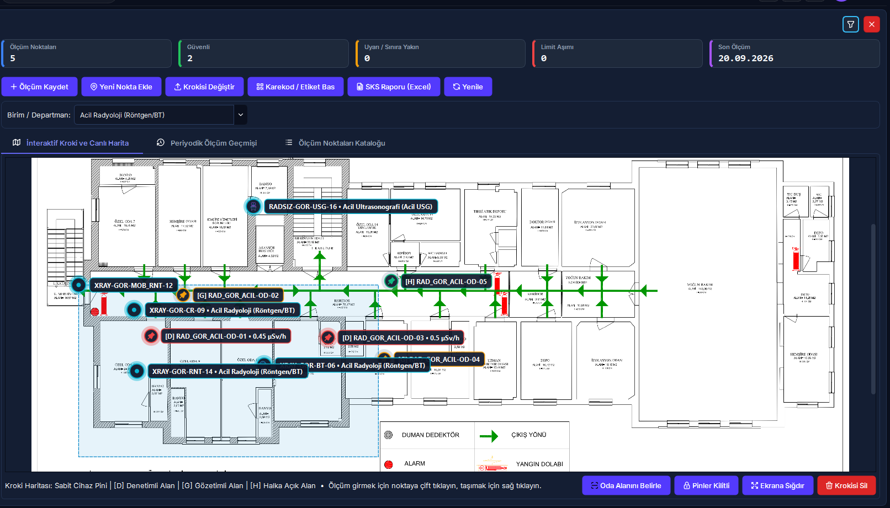
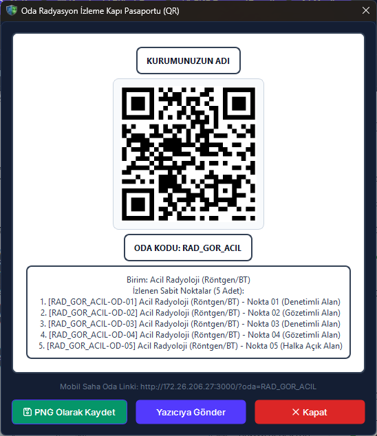

Ortam Dozu ve Kroki Haritası
Kurumun mimari kat planları (vektörel PDF veya yüksek çözünürlüklü görsel) üzerinde radyasyon izleme noktalarını, çoklu oda sınırlarını ve sabit cihaz konumlarını canlı haritalandırır; kalibrasyon süresi geçerli ölçüm cihazlarıyla doz hızı kayıtları alır, limit aşımında otomatik olay ve DÖF başlatır, kapı QR pasaportu ve SKS 6.1 Excel raporu üretir.
Kısa Reçete: Kroki Üzerinde Ortam Dozu, QR ve Otomatik DÖF
Radyasyon alanlarının mimari kroki üzerinde sınıflandırılması, kalibrasyonlu cihazla periyodik ölçüm alınması ve limit aşımlarında anında kalite aksiyonu başlatılması.
[Kroki Yükle] ile kat planını ekleyin; [Oda Alanını Belirle] ve [Yeni Nokta Ekle] ile alan eşiklerini konumlandırın; [Ölçüm Kaydet] ile kalibre cihazdan okunan dozu girin; saha baskıları için [Karekod / Etiket Bas] ve denetimler için [SKS Raporu (Excel)] butonlarını kullanın.
Kat planı döndürmesinde pin ve oda sınırları otomatik taşınır; eşik aşımlarında pin sarıya/kırmızıya döner ve otomatik Olay Bildirimi ile DÖF açılır; kapı QR kodundan mobil cihazla sahadan ölçüm girilebilir.
5N1K Kural ve Arayüz Çözümleme Tablosu
Mimari kat planı yönetimi, NDK alan eşikleri, kalibrasyon emniyet kilidi, otomatik DÖF ve QR baskı kuralları.
Kritik Sahada Yanlış Bilinen Kurallar (Mit Avcısı)
Süreç Akış Şeması
Kalibrasyonu Geçerli mi?"} F -->|Süresi Dolmuş| G["ENGEL: Ölçüm Kaydı Reddedilir"] F -->|Geçerli| H{"Doz Hızı Eşik
Karşılaştırması"} end subgraph S3 ["3. AŞAMA: UYARI, OTOMATİK DÖF VE SKS RAPORU"] direction LR H -->|Normal| I["Yeşil Pin: Güvenli"] H -->|Uyarı Aralığı| J["Sarı Pin: Yakın İzleme"] H -->|Limit Aşımı| K["Kırmızı Pin: Otomatik Olay & DÖF"] I & J & K --> L(["SKS Raporu (Excel) Resmi Çıktısı"]) end D ==> E
- Kroki ve Nokta Kurulumu: Birime PDF veya görsel kat planı yüklenir; oda sınırları çizilir, sabit cihazlar ve alan sınıfı eşikli izleme noktaları konumlandırılıp kapı QR etiketleri basılır.
- Kalibrasyon Kilidi ve Ölçüm: Saha veya masaüstünden doz girişi yapılırken cihazın kalibrasyon tarihi denetlenir; tarihi geçmiş cihazlarla kayıt engellenir.
- Otomatik Olay, DÖF ve Rapor: Normal ve uyarı ölçümleri kroki pinlerini boyar; limit aşımında ise otomatik Olay Bildirimi ve DÖF açılarak tüm geçmiş SKS 6.1 Excel raporuna yansıtılır.
Arayüz Ekran Görünümleri


Adım Adım İşlem Rehberi
1. Kat Planı Yükleme, Oda Sınırı Çizme ve Ölçüm Noktası Ekleme
- Sol menüden [Ortam Dozu ve Kroki Haritası] ekranını açıp birimi seçin ve [Kroki Yükle] butonuyla vektörel PDF veya yüksek çözünürlüklü kat planını bağlayın (yön ters ise [Sola Döndür] / [Sağa Döndür] ile hizalayın, [Ekrana Sığdır] ile görünümü ortalayın).
- [Oda Alanını Belirle] butonuna basarak harita üzerinde odaların zırhlı sınırlarını çizin; ardından [Yeni Nokta Ekle] ile ölçüm noktasını ve NDK alan sınıfını (Denetimli, Gözetimli veya Halka Açık Alan) tanımlayın.
- Noktaların yerini düzenlemek için [Pinler Kilitli] düğmesini açıp sürükleyin ve yerleşim bittiğinde tekrar kilitleyin.
2. Kalibre Cihazla Ortam Dozu Ölçümü Kaydetme
- Üst çubuktan [Ölçüm Kaydet] butonuna tıklayın (veya kroki üzerinde ilgili nokta pinine çift tıklayın).
- Seçilen nokta için ölçüm tarihini, ölçülen doz hızını (µSv/h) ve doğal arka plan (fon) değerini girin. Sistemde Cihaz Envanterinde tek bir aktif Radyasyon Ölçüm Cihazı tanımlıysa cihazın Marka/Model ve son kalibrasyon tarihi arka planda otomatik işlenir; birden fazla ölçüm cihazı kayıtlıysa açılan Ölçüm Cihazı (Marka / Model) listesinden ilgili cihazı seçip [Ölçümü Kaydet ve Haritayı Güncelle] butonuna basın.
- Limit aşımı varsa sistem uyarı vererek Olay Bildirimi (Modül 15) altında otomatik kayıt ve DÖF başlatır; seçilen izleme noktasının önceki tüm kayıtlarını incelemek için Seçili Nokta Ölçüm Tarihçesi (masaüstünde Periyodik Ölçüm Geçmişi) sekmesini kullanın.
3. Kapı QR Pasaportu, Toplu Baskı Paketi, SKS Excel ve Saha Mobil Akışı
- Oda giriş kapısı veya tekil nokta etiketi için [Karekod / Etiket Bas] menüsünden etiketi üretin ([PNG Olarak Kaydet] veya [Yazıcıya Gönder]); tüm noktaları matbaa ve tabela baskısı için toplu indirmek isterseniz toplu QR paketi seçeneğiyle 300 DPI etiketler, baskı rehberi ve icmal listesini içeren arşivi dışa aktarın.
- Denetimler öncesinde [SKS Raporu (Excel)] butonuyla kurum antetli ve renk kodlu resmi denetim tablosunu oluşturun.
- Web ve Mobil Saha Kullanımı: Saha personeli üstteki Ortam Dozu Eşleştirme ve Seçim Merkezi çubuğundan yalnızca görevli olduğu birimleri seçebilir ya da kapıdaki QR kodu telefonla okutarak doğrudan ilgili odaya/noktaya odaklanabilir. İnteraktif kroki üzerinden yeni ölçüm noktası ve doz ölçümü girildiğinde kayıtlar Merkezi Onay Kuyruğuna iletilir; Seçili Nokta Ölçüm Tarihçesi sekmesinden ise o noktaya ait kalıcı geçmiş ve onay durumu anlık izlenir.
Sıkça Sorulan Sorular (SSS)
Mimari kat planı olarak vektörel PDF dosyası yükleyebilir miyim?
Kat planını döndürdüğümde üzerindeki pinler ve oda sınırları kaybolur mu?
Hayır. [Sola Döndür] veya [Sağa Döndür] uygulandığında sistem harita üzerindeki tüm ölçüm pinlerinin, sabit cihazların ve oda sınırlarının koordinatlarını yeni açıya göre otomatik hesaplayıp taşır.
Üzerinde ölçüm geçmişi bulunan bir izleme noktasını neden silemiyorum?
SKS 6.1 ve NDK kalite izlenebilirliği gereğince üzerinde en az bir adet kayıtlı doz ölçümü bulunan noktaların silinmesi sistem tarafından engellenir; plan değiştiğinde geçmiş kayıtların korunması için nokta pasif veya taşınmış olarak yönetilmelidir.
Cihaz kalibrasyon uyarısı aldığımda ölçüm girişini nasıl açabilirim?
Ölçüm aletinin yetkili kalibrasyon merkezinden (örneğin TENMAK İkincil Standart Dozimetri Laboratuvarı) alınan yeni kalibrasyon belgesini ve güncel bitiş tarihini Cihaz Yönetimi ekranından işledikten sonra ölçüm kaydı anında açılır.